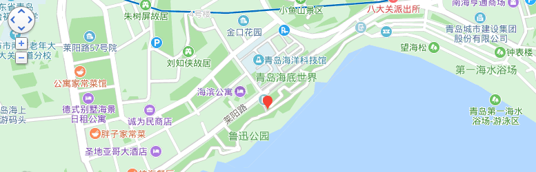

青岛海底世界
时间：2019/11/11

【简介】
青岛海底世界位于青岛汇泉湾畔，毗邻青岛著名风景区鲁迅公园、青岛第一海水浴场和五四广场。它整合了青岛水族馆、标本馆、淡水鱼馆等原有旅游资源，与依山傍海的自然美景相融合，形成山中有海的奇景。 独特的地理位置、现代化的展示手段、与水族馆、标本馆、淡水鱼馆的良好整合和互补，使其成为全国独具特色海洋生态大观园。
【构造】
青岛海底世界分为：潮间带、海底隧道、船舱通道、海洋剧场、圆柱展缸、热带雨林区、生物精品区、科普教育区等几大区域。
【交通信息】
四方火车站/四方长途站：坐15路到小西湖站下车后前行500米。 从青岛流亭国际飞机场：乘坐机场大巴从海天国际大酒店下车后乘坐316路到鲁迅公园下即可。 自驾车：从济青高速公路下来后，走青岛市区，308国道，然后从山东路到香港西路，到达第一海水浴场西侧100米即可。 公交线路：6路、26路、202路、214路、223路、228路、231路、304路、311路、312路、316路、321路、411路、501路、504路、都市观光1号线、隧道2路、隧道6路在鲁迅公园（海底世界）站下。 坐地铁M3号线在汇泉广场站下车。 海底世界西南方两百多米处有公交车“鲁迅公园”站，有公交26、202路环线、214、223、228、231路环线、304、312、316、321、501、504、隧道2路、隧道6路、旅游1号线等车可经停。 青岛火车站前可乘坐公交223路至“鲁迅公园”站下，然后步行两百多米即到，全程约30分钟。